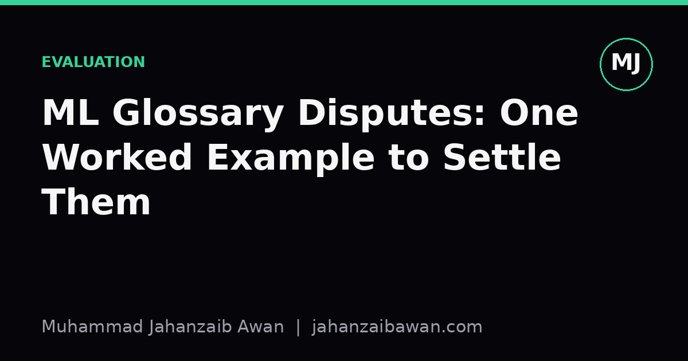

ML Glossary Disputes: One Worked Example to Settle Them
People argue about what 'validation set' or 'accuracy' really means. A single worked example shows why the disagreement happens and how to stop it from costing you.

Why the argument keeps happening
I have sat in enough meetings to know that machine learning has a vocabulary problem. Two people say 'validation set' and mean two different things. Someone reports 'accuracy' on a dataset where the classes are split ninety to ten, and nobody asks whether that number is doing any honest work. These are not pedantic quibbles. They change what a result actually claims, and they are a quiet source of irreproducible papers and overconfident production deployments.
The usual response to a glossary dispute is to reach for a textbook definition and declare victory. That rarely works, because the textbooks themselves disagree, and because the words were coined in different subfields under different assumptions. A statistician's 'validation' and a Kaggle competitor's 'validation' grew up in different houses. Rather than adjudicate definitions in the abstract, I find it far more useful to run one concrete scenario through every candidate definition and see where they actually diverge. That is the only way to see which disagreements are cosmetic and which ones change your conclusions.
So here is the scenario. Imagine a dataset of five thousand customer support tickets, labelled as either 'resolved on first contact' or 'escalated'. Nine out of ten tickets are resolved on first contact. You are building a classifier to predict escalation early, so agents can be routed sensibly. This is mundane and realistic, which is exactly why it is a good test bed for glossary disputes: the ambiguity hides in ordinary work, not in exotic edge cases.
Dispute one: what counts as the validation set
Camp A treats 'validation set' and 'test set' as synonyms: a single held-out slice used once at the end to report a final number. Camp B treats the validation set as something you touch repeatedly during development, to tune hyperparameters and choose between models, while the test set is sealed away and touched exactly once. These are not the same procedure, and conflating them is how leakage creeps in.
Here is the worked part. Split the five thousand tickets: three thousand five hundred for training, seven hundred fifty for validation, seven hundred fifty for test. Under Camp A's usage, a practitioner might tune the decision threshold, try three different feature sets, and pick a regularisation strength, all while watching performance on that one held-out slice, then report that same number as 'the' result. Under Camp B's usage, all that tuning happens against the seven hundred fifty validation tickets, and only once the model is frozen does it ever see the test set.
The difference shows up numerically. Suppose after five rounds of tuning against the same held-out slice, the best configuration scores an F1 of 0.71 on it. If that slice was genuinely never touched during tuning, 0.71 is a fair estimate. But if it was the same seven hundred fifty tickets used for every tuning decision, you have implicitly fitted to its noise, and the true generalisation performance, measured on the untouched seven hundred fifty test tickets, often comes in lower, say 0.65. The gap is not a rounding error. It is the cost of calling a tuning set a test set.
Dispute two: what 'accuracy' is actually telling you
With the splits settled, the second dispute surfaces immediately. Someone reports '91 per cent accuracy' on the test set and treats it as good news. But recall that ninety per cent of tickets are resolved on first contact already. A classifier that predicts 'resolved' for every single ticket, doing no learning whatsoever, scores ninety per cent accuracy by construction. Ninety-one per cent is barely better than guessing the majority class.
This is the oldest trap in applied classification, yet it keeps resurfacing because 'accuracy' sounds like a complete, self-evident metric. It is not, once the classes are imbalanced, because it weights the easy majority class and the rare, operationally important minority class identically. In our scenario, escalations are the minority class and the one the business actually cares about catching early.
Running the same worked example through precision, recall, and F1 on the escalation class makes the disagreement concrete. The majority-class baseline scores ninety per cent accuracy but zero recall on escalations: it catches none of them. A genuinely useful model might score eighty-six per cent accuracy, lower than the baseline, but with sixty per cent recall and fifty per cent precision on escalations, meaning it actually flags more than half of the tickets that will go wrong. If your team's glossary lets 'accuracy' stand in unchallenged as the headline metric, you will quietly prefer the useless baseline over the useful model. The dispute over what accuracy means is not academic; it determines which model gets deployed.
What this buys you in practice
The pattern across both disputes is the same. A term sounds settled until you push a specific, numbered example through it, and then the vague version and the precise version start producing different decisions. The fix is not to memorise a single canonical glossary, because none exists that every subfield honours. The fix is to make your own usage operational and explicit every time a term could be read two ways.
Concretely, that means stating how many times a held-out slice was used before anyone sees a reported number, and stating which class a reported metric is computed against when classes are imbalanced. It costs two sentences in a report or a README and it closes off the two most common routes to an inflated, non-reproducible result.
I treat glossary disputes as a diagnostic rather than an annoyance now. If a term is worth arguing about, it is usually because two defensible readings of it lead to different numbers on a real dataset, and that is worth finding out before the model ships rather than after.